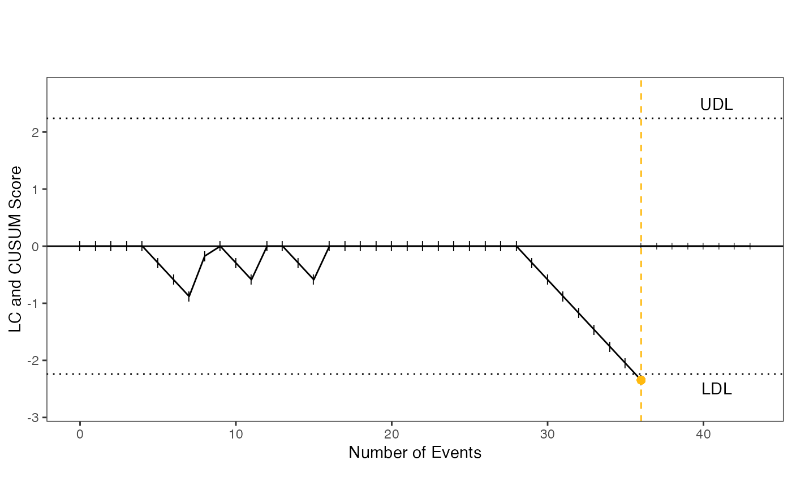

cusumr_plot.RdThe cusumr_plot() command builds on the same architecture of the cusumr command, while automating the production of a graphic visual. Visuals are developed using the ggplot2 package.
cusumr_plot( events_outcomes, acceptable_rate = 0.2, unacceptable_rate = 0.4, type1_error_rate = 0.1, type2_error_rate = 0.1, learning = TRUE, reset = TRUE )
| events_outcomes | vector = [n_samples of 0s and 1s]. Binary Integer values. If intergers are not 0 or 1, then the FALSE alarms should be explicitly given. |
|---|---|
| acceptable_rate | numeric, default=0.2. Number between 0 and 1. Acceptable success rate of the process being monitored. |
| type1_error_rate | numeric, default=0.1. Number between 0 and 1. A false positive or type 1 error rate |
| type2_error_rate | numeric, default=0.2 Number between 0 and 1. A false negative or type 2 error rate |
| learning | boolean, optional (default=True). Whether to start from learning phase or from monitoring phase. |
| reset | boolean, optional (default=True). Whether to reset score when the score hits the decision limit in monitoring phase. If yes, the cusum score will start at zero again and restart monitoring. |
The use of the Cusum technique in the assessment of trainee competence in new procedures. Int J Qual Health Care. 2000 Oct;12(5):433-8.
https://www.ncbi.nlm.nih.gov/pubmed/11079224
Cumulative sum (CUSUM) assessment and medical education: a square peg in a round hole. Anaesthesia, 2011, 66, pages 243-254.
https://onlinelibrary.wiley.com/doi/pdf/10.1111/j.1365-2044.2011.06692.x
An application of the learning curve cumulative summation test to evaluate training for endotracheal intubation in emergency medicine. Emerg Med J, 2015;32:291?..294.
https://www.ncbi.nlm.nih.gov/pubmed/24154942
df <- df <- c(0,0,0,0,1,1,1,0,0,1,1,0,0,1,1,0,0,0,0,0,0,0,0,0,0,0,0,0,1,1,1,1,1,1,1,1,1,1,1,1,1,1,1,0,1,0,1) cusumr_plot(df)cusumr_plot(events_outcomes = df, learning = FALSE, reset = TRUE)#> Warning: Removed 1 row(s) containing missing values (geom_path).#> Warning: Removed 1 rows containing missing values (geom_point).#> Warning: Removed 1 row(s) containing missing values (geom_path).#> Warning: Removed 1 rows containing missing values (geom_point).#> Warning: Removed 1 row(s) containing missing values (geom_path).#> Warning: Removed 1 rows containing missing values (geom_point).#> Warning: Removed 1 row(s) containing missing values (geom_path).#> Warning: Removed 1 rows containing missing values (geom_point).#> Warning: Removed 4 rows containing missing values (geom_point).